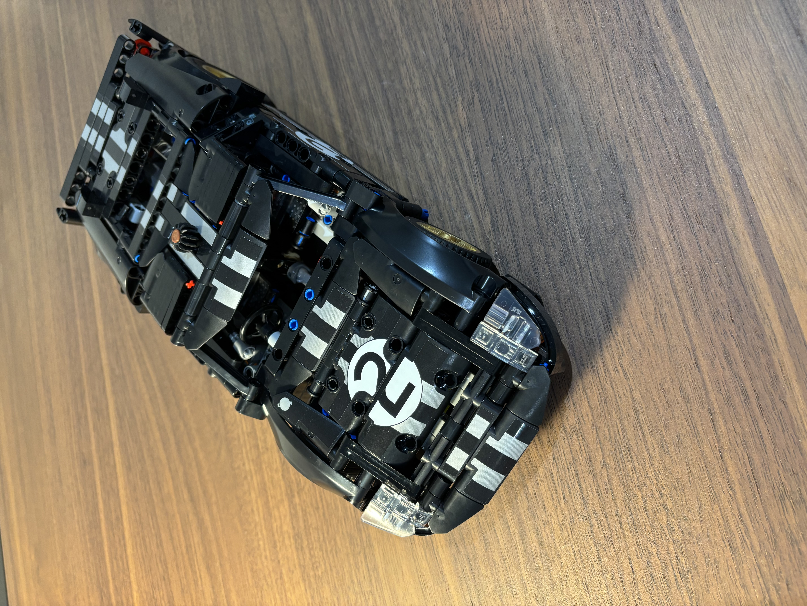
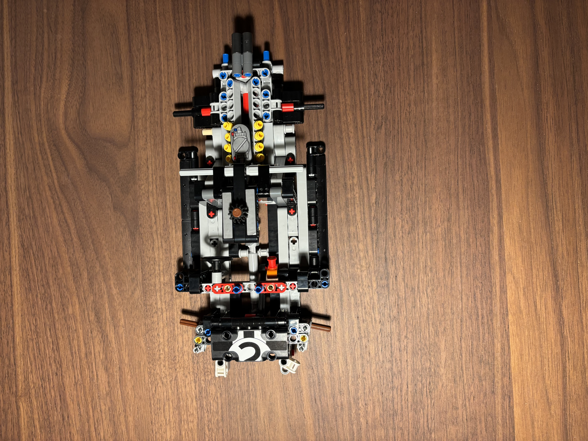
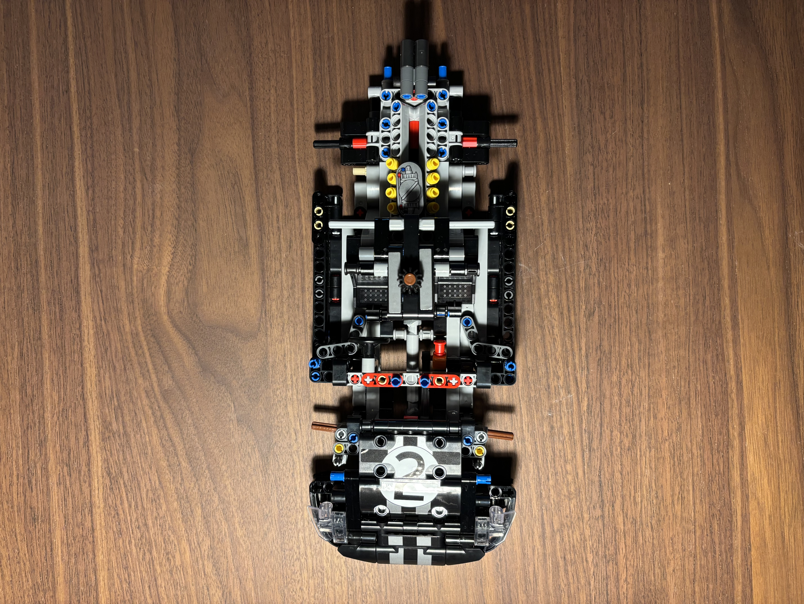
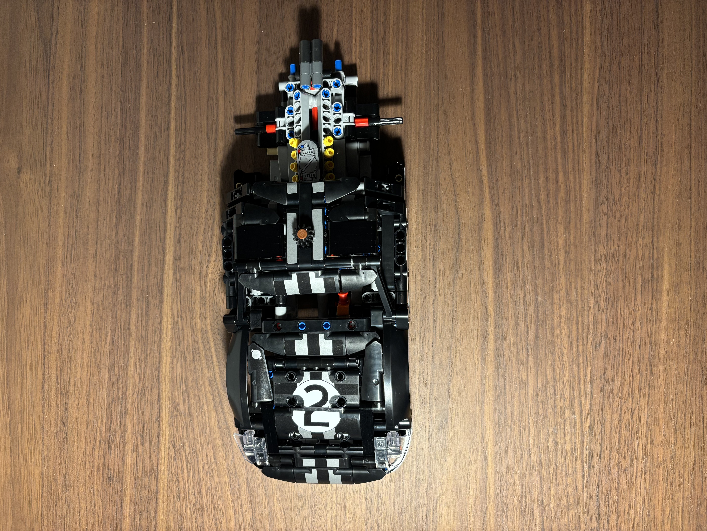
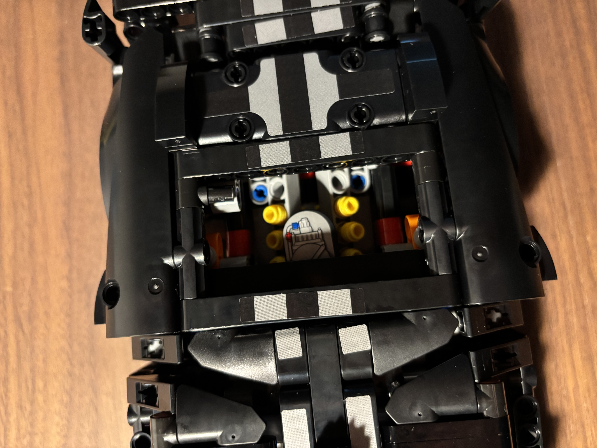

Ford GT40 Mk II
Lego Technic recreation of the 1966 Le Mans winner. 800 pieces, built from scratch with full development breakdown documented step by step. The chassis-up assembly mirrors how I think about hardware: sub-systems first, integration last, every joint earning its place.
// BUILD NOTES
People ask why I still build Lego at 22. The honest answer: it's where my engineering brain learned to think.
The 1966 Ford GT40 Mk II is the car that broke Ferrari at Le Mans. So when I saw the Technic recreation, I had to build it.
800 pieces, chassis-up. What I noticed building it: every sub-system has to work in isolation before you can integrate it. Suspension geometry first, then the drivetrain, then the bodywork. You can't shortcut the order.
Lego is just engineering with the failure cost set to zero. That's why I keep coming back.
// DEVELOPMENT BREAKDOWN // STEP-BY-STEP

[Caption for step 01]

[Caption for step 02]

[Caption for step 03]

Final assembly // complete